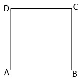

Welcome to Katik
Hai Sobat,Selamat datang di Katik :3
Sebuah web apps sederhana yang berfungsi untuk menghitung nilai luas dan keliling bangun datar
Sebuah web apps sederhana yang berfungsi untuk menghitung nilai luas dan keliling bangun datar
Luas Persegi

Rumus Luas Persegi yaitu:
L = S X S
Di mana:
L = Luas
S = Sisi
Hitung Luas Persegi
Keliling Persegi
Rumus Keliling Persegi yaitu:
K = 4 X S
Di mana:
K = Keliling
S = Sisi
Hitung Keliling Persegi